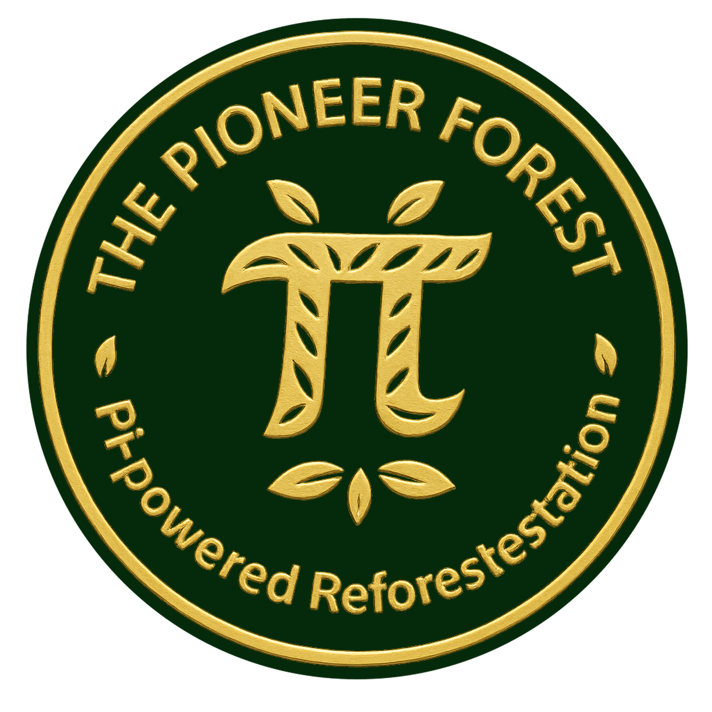

Future paths for music, public signals, impact records and updates.
Featured identity track: I Dreamed a Forest — Awakening.
Future opt-in public supporter view. No ranking.
Later: real donations, planting records, CO₂ and certificates.
Later: Pi-native updates and Fireside transparency links.
Development preview — Testnet phase